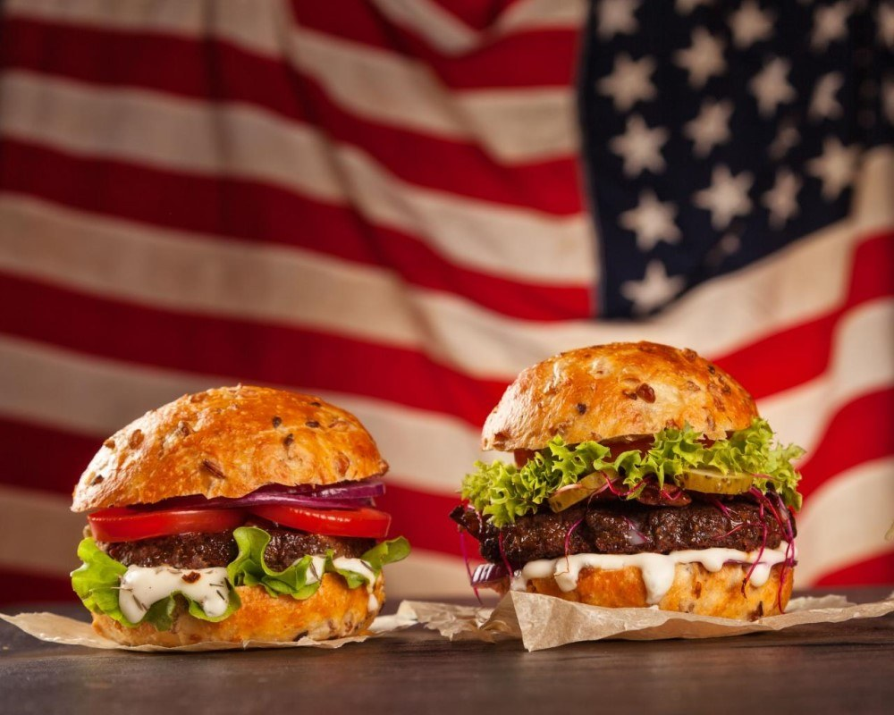
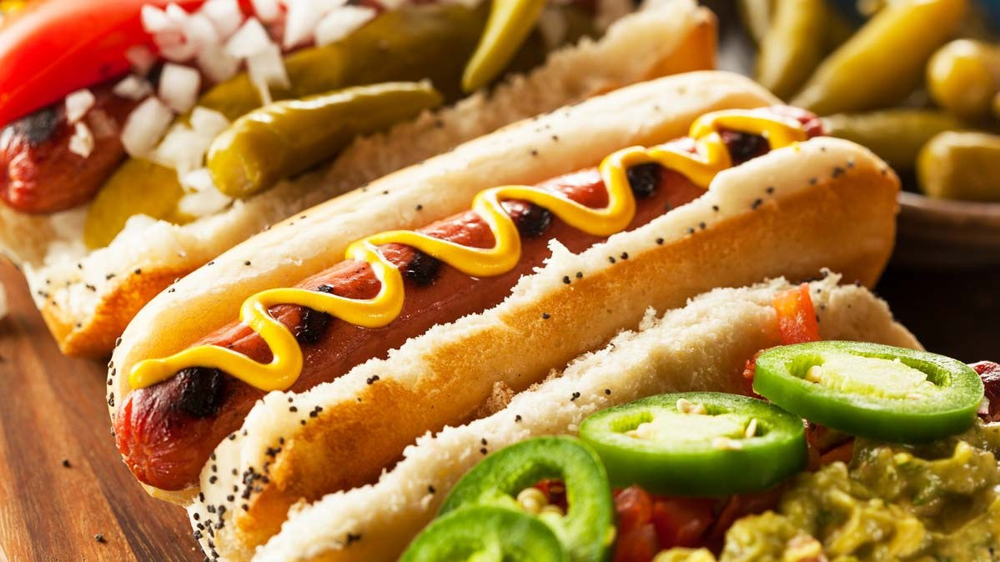
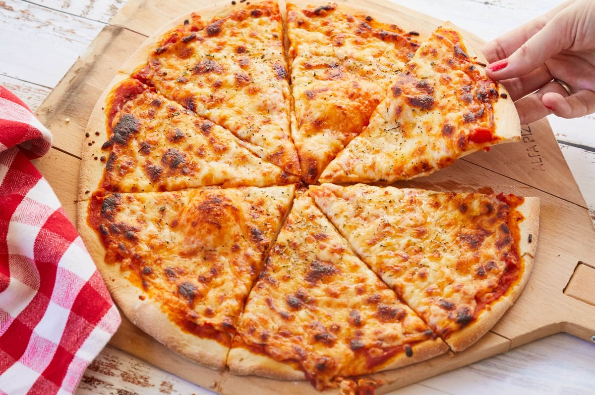
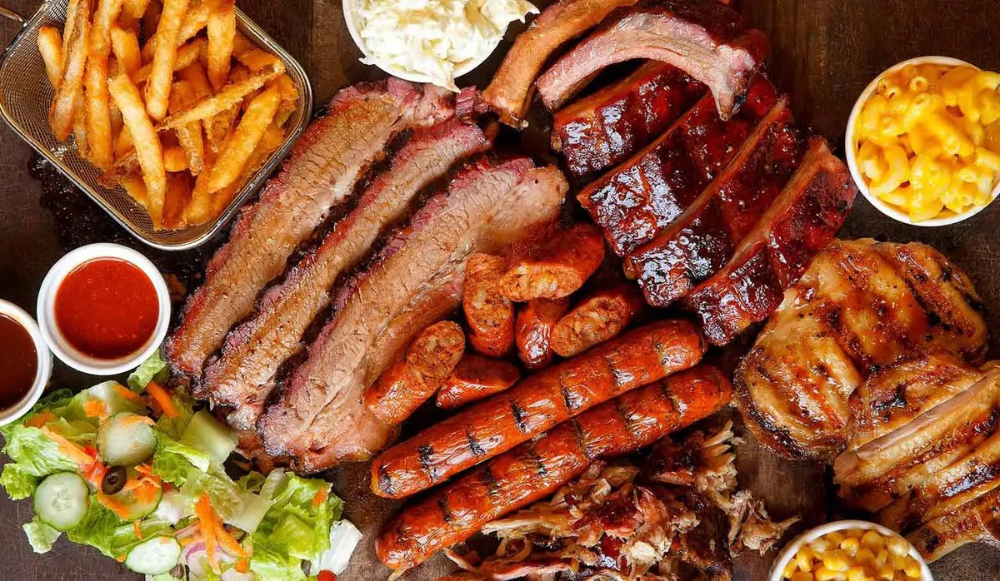
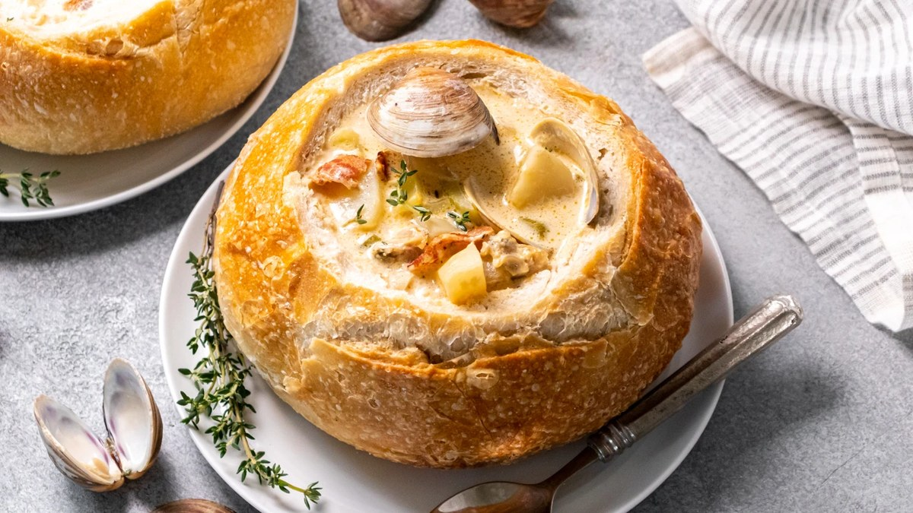
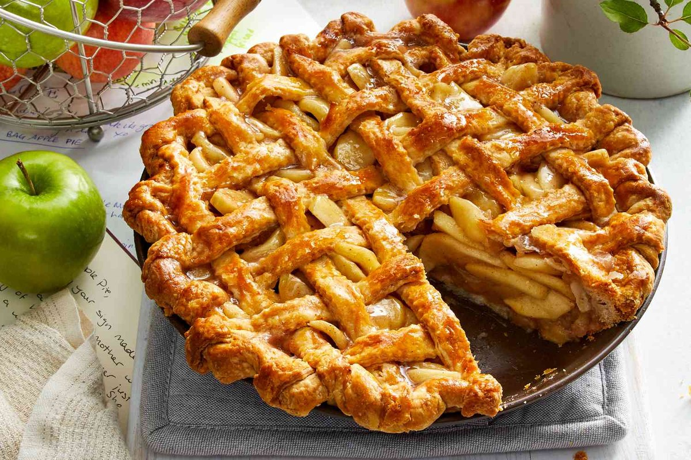
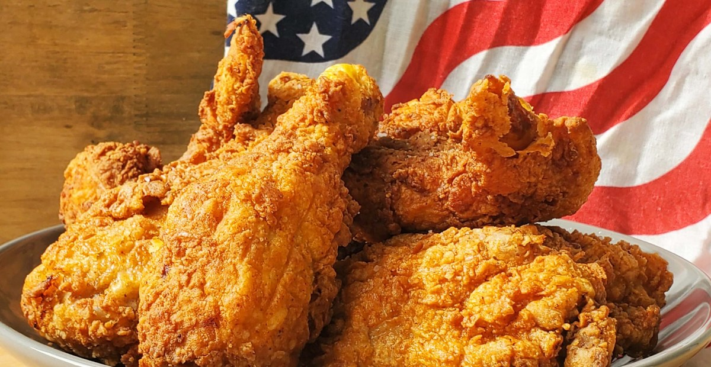
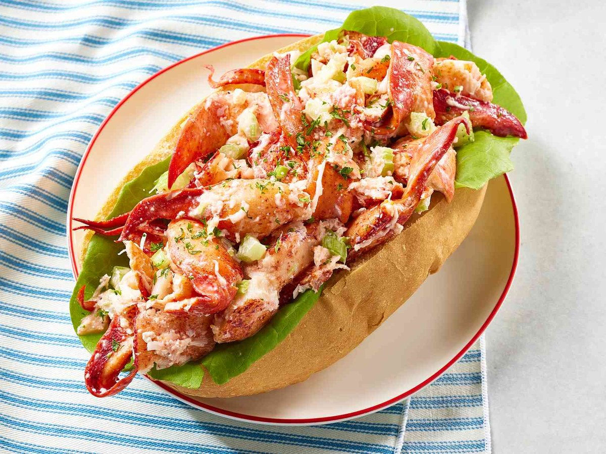
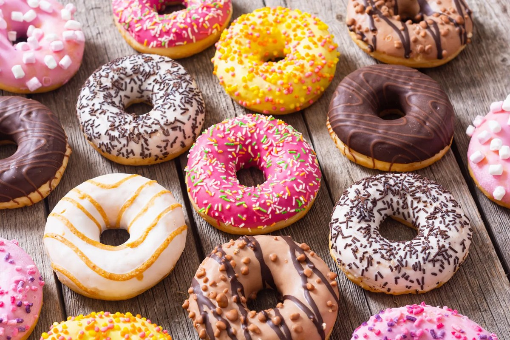

Súp sánh mịn từ nghêu, khoai tây và kem, đặc trưng của New England.
Hành trình khám phá văn hóa
Ẩm thực
Mỹ
Hương vị của nhiều nền văn hóa trên một bàn ăn chung
Từ chiếc bánh táo ngày lễ đến xiên thịt nướng ngoài sân sau, mỗi món ăn Mỹ đều mang dấu vết của những người đã đến, sinh sống và nấu ăn trên mảnh đất này.

Khái quát
Điều gì làm nên bản sắc?
Ẩm thực Mỹ không đến từ một truyền thống duy nhất. Món ăn của người bản địa, người châu Âu, người gốc Phi, người Mỹ Latinh và người châu Á đã hòa trộn qua nhiều thế hệ, tạo nên nhiều món ăn mang tính địa phương rõ nét.
- Phần ăn lớn, nhiều món nướng, chiên và hầm.
- Thịt bò, thịt gà, thịt heo, ngô và khoai tây giữ vai trò quan trọng.
- Ngày càng chú trọng nguyên liệu địa phương và lựa chọn đa dạng.
Nồi hầm chung
Người Mỹ thường nói về “melting pot”, hình ảnh nhiều nền văn hóa hòa vào nhau. Trên bàn ăn, điều đó thể hiện ở pizza kiểu Ý, taco kiểu Mexico, món chiên kiểu miền Nam và bánh mì kẹp xúc xích gốc Đức, tất cả đều được xem là món Mỹ.
Bản đồ hương vị
Bốn vùng – Bốn sắc thái
Khí hậu, nguồn nguyên liệu và lịch sử di cư tạo nên những khẩu vị rất khác nhau giữa các vùng.
Đông Bắc
Hải sản tươi từ Đại Tây Dương và những món ăn ấm bụng cho mùa đông lạnh.
Thịt tôm hùm trộn nhẹ trong ổ bánh mì nướng bơ.
Đậu hầm lâu với mật mía và thịt muối.
Bánh mỏng, bản to, thường gấp đôi để ăn khi đi bộ.
Miền Nam
Món chiên, hầm và nướng chậm, đậm đà và nhiều gia vị.
Vỏ giòn vàng, thường ăn cùng bánh quy bơ và rau cải xanh hầm.
Thịt nướng chậm trên khói gỗ; mỗi bang có cách tẩm và sốt riêng.
Món hầm đặc của Louisiana với hải sản hoặc xúc xích và gia vị cay.
Bột ngô nấu mềm, ăn sáng hoặc cùng tôm.
Trung Tây
Vùng đồng ruộng, nổi tiếng với món no bụng và đồ từ sữa.
Đế sâu như chiếc bánh, phủ nhiều phô mai và nước sốt cà chua.
Mang dấu ấn người Đức nhập cư, phổ biến ở Wisconsin.
Phô mai tươi chiên giòn, món ăn vặt quen thuộc.
Món nướng khay gồm thịt, rau và khoai, đặc trưng của Minnesota.
Miền Tây
Nắng nhiều, rau quả quanh năm, ảnh hưởng mạnh từ Mexico và châu Á.
Cá chiên hoặc nướng cuốn bánh ngô với bắp cải và sốt chua.
Ổ bánh vỏ dày, ruột dai, vị chua nhẹ.
Thường được nướng trên ván gỗ hoặc áp chảo.
Rau quả tươi từ California xuất hiện trong nhiều món nhẹ.
Điểm chung: bữa ăn lớn, nước sốt ăn kèm và thói quen quây quần quanh bàn vào dịp lễ.
Món quen thuộc
Những hương vị được yêu thích
Từ quán ăn ven đường đến bàn tiệc cuối tuần, đây là những món gần như ai cũng từng thử.
Hamburger
Thịt bò xay kẹp trong bánh mì tròn, được xem là biểu tượng của ẩm thực Mỹ dù có gốc từ Hamburg, Đức.

Hot dog
Xúc xích kẹp bánh mì, ăn cùng tương cà, mù tạt hoặc dưa chuột muối; quen thuộc ở các sự kiện thể thao.

Pizza New York và Chicago
New York có đế mỏng, giòn, gấp được; Chicago có đế dày, nhiều lớp nhân như một chiếc bánh pie.

BBQ
Mỗi vùng một phong cách: Texas với thịt bò brisket, Kansas City với sốt ngọt, Memphis với sườn nướng.

Súp nghêu
Đặc trưng của New England, nấu từ nghêu, khoai tây, hành tây và kem cho đến khi sánh mịn.

Bánh táo
Câu nói “as American as apple pie” cho thấy món bánh này gắn bó với người Mỹ đến mức nào.

Gà rán
Bột chiên giòn bên ngoài, mềm bên trong, thường ăn cùng khoai tây chiên và nước sốt.

Lobster roll
Món hải sản của New England, có nguồn gốc từ Maine, gồm tôm hùm trong bánh mì mềm.

Donut
Bánh rán ngọt với vô số hương vị, từ phủ đường truyền thống đến bacon maple hay matcha.
Hơn cả một món ăn
Văn hóa trên bàn ăn
- Lễ Tạ ơn: vào thứ Năm của tuần thứ tư tháng 11, nhiều gia đình dọn gà tây, nhân nhồi, khoai tây nghiền và bánh bí ngô.
- Tiệc nướng ngoài trời: đặc biệt vào dịp Quốc khánh 4 tháng 7, cả nhà tụ họp ở sân sau.
- Bữa brunch cuối tuần: gộp bữa sáng và bữa trưa, thường có trứng, bánh kếp và nước ép.
- Mang món đến chung vui: tiệc “potluck” để mỗi người góp một món.
“Một chiếc bàn đủ lớn để mọi người cùng ngồi.”
Ăn nhanh, nhưng không chỉ ăn nhanh
Chuỗi ăn nhanh là hình ảnh quen thuộc, nhưng bên cạnh đó là hệ thống chợ nông sản, quán ăn gia đình và những công thức được truyền qua nhiều thế hệ.
Thay đổi theo thời gian
Ẩm thực Mỹ trong đời sống hiện đại
Thói quen ăn uống đang thay đổi cùng với sức khỏe, công nghệ và sự đa dạng của người dân.
Nguyên liệu địa phương
Chợ nông sản và nông trại cung cấp thực phẩm tươi cho nhà hàng và gia đình.
Giao thoa văn hóa
Ngày càng nhiều món kết hợp, như taco Hàn Quốc hay bánh mì kẹp kiểu Việt.
Lựa chọn lành mạnh
Món chay, ít đường và thay thế từ thực vật xuất hiện nhiều hơn trong thực đơn.
Chúng ta có thể làm gì?
Thử món của nhiều vùng, tìm hiểu nguồn gốc món ăn, ủng hộ nhà sản xuất địa phương và hạn chế lãng phí thực phẩm.Nhận thông tin
Nhận thêm bài viết về ẩm thực Mỹ
Để lại họ tên và email, bạn sẽ nhận gợi ý món ăn, công thức và câu chuyện văn hóa bàn ăn.
Lời kết
Trân trọng từng hương vị Mỹ
“Mỗi món ăn là một câu chuyện về những người đã mang nó đến đây.”
Bốn vùng khác nhau về khẩu vị, nguyên liệu và cách chế biến, nhưng cùng tạo nên một nền ẩm thực đa dạng, gần gũi và luôn thay đổi.
Cảm ơn đã lắng nghe!